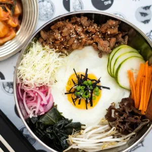
Bestseller! A vibrant Korean-inspired rice bowl loaded with fresh veggies and flavorful toppings all mixed together with our signature sauce for that perfect Bibimbap experience.
₱195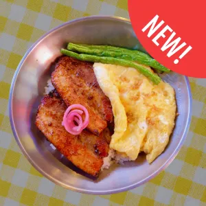
Our new and improved bacon dish — now made with premium cuts of meat, extra thick slices and even more flavor in every bite.
₱255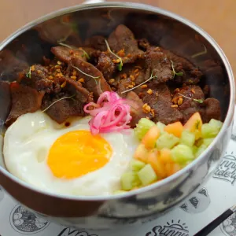
Bestseller! Flavorful pork tapa marinated in our signature blend of spices and seasonings, served with rice and egg for the ultimate all-day breakfast.
₱195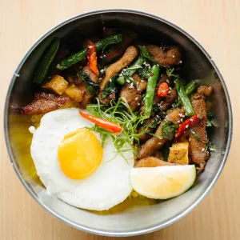
Bestseller! Stir-fried pork with fresh basil, garlic and chilies cooked in authentic Thai flavors, served over rice for a bold and aromatic dish.
₱195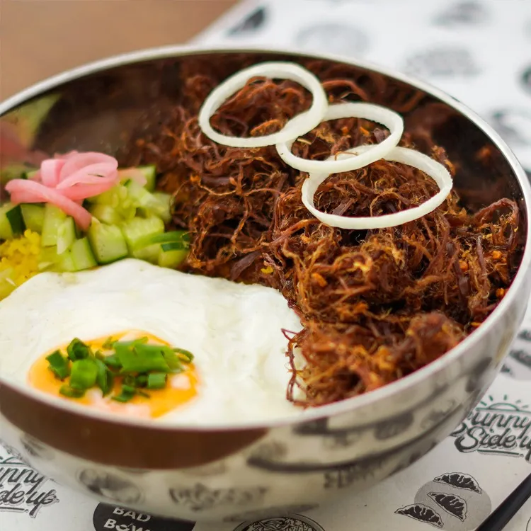
Bestseller! Crispy shredded beef flavored with batuan, an Ilonggo souring fruit that gives this dish its distinct tangy kick. A crunchy, savory-sour take on a local classic.
₱195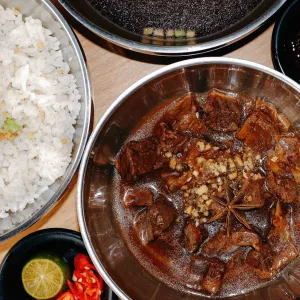
Slow-braised beef simmered in a savory-sweet sauce, served with garlic rice and hot soup — a comforting Filipino classic.
₱230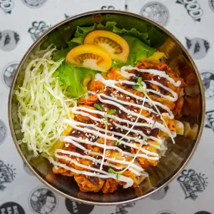
Crispy chicken cutlet served with our rich, flavorful sauce for a satisfying Japanese-inspired treat.
₱235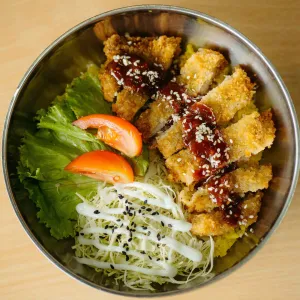
Crispy fried pork cutlets glazed with a sweet and spicy Korean sauce for the perfect balance of crunch, heat and flavor.
₱215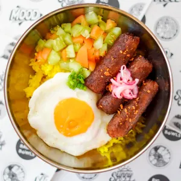
Savory chorizo served with a sunny-side-up egg and fresh, vibrant vegetables for a hearty and colorful meal.
₱235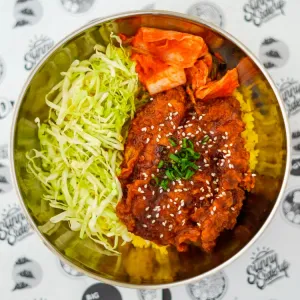
Korean-style fried chicken glazed in our rich, sweet and spicy Yangnyeom sauce — crispy on the outside, juicy on the inside and packed with bold flavor in every bite.
₱235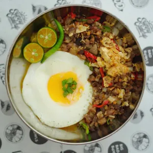
Crispy and flavorful pork sisig served sizzling hot, seasoned with spices and calamansi for that perfect mix of savory, tangy and spicy.
₱235